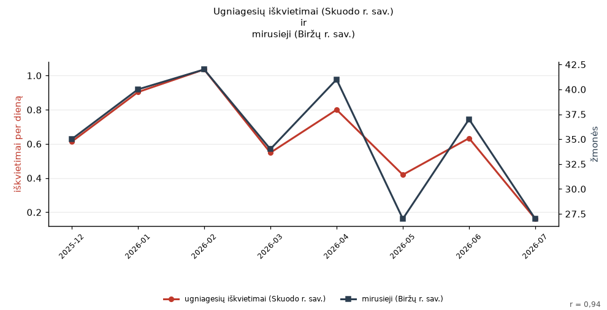
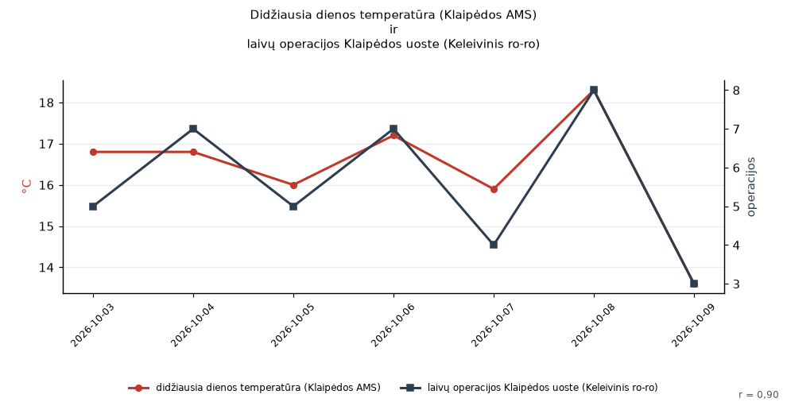
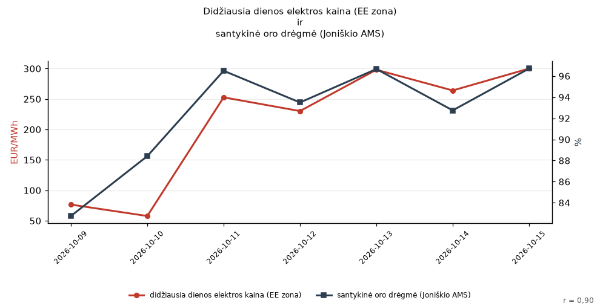
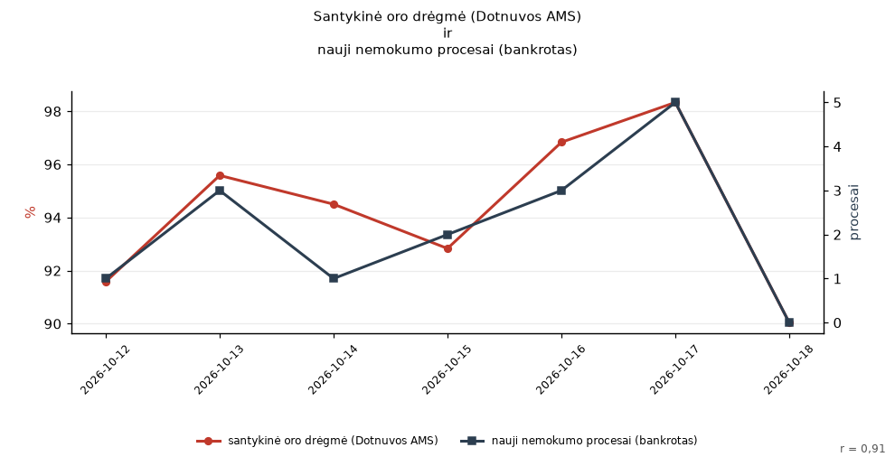

2026-10-22

Duomenų šaltiniai:
Gaisrai ir gelbėjimo darbai (PAGD) · Mirusieji per mėnesį (Valstybės duomenų agentūra)
Ugniagesių iškvietimai (Skuodo r. sav.) ir mirusieji (Biržų r. sav.) kyla ir krenta kartu: r = 0,94 per 8 mėn. (2025-12 – 2026-07). Ar tai tikrai tik sutapimas?
Duomenys: „ugniagesių iškvietimai (Skuodo r. sav.)“ (iškvietimai) ir „mirusieji (Biržų r. sav.)“ (žmonės).
Tyler Vigen'o „Spurious Correlations“ dvasia: iš tūkstančių atsitiktinių Lietuvos atvirų duomenų porų šios dvi nupiešė tą pačią kreivę.
2026-10-22

Duomenų šaltiniai:
LHMT orų stebėjimai · Klaipėdos uosto laivų operacijos
Didžiausia dienos temperatūra (Klaipėdos AMS) ir laivų operacijos Klaipėdos uoste (Keleivinis ro-ro) kyla ir krenta kartu: r = 0,90 per 7 d. (2026-10-03 – 2026-10-09). Ar tai tikrai tik sutapimas?
Duomenys: „didžiausia dienos temperatūra (Klaipėdos AMS)“ (°C) ir „laivų operacijos Klaipėdos uoste (Keleivinis ro-ro)“ (operacijos).
Tyler Vigen'o „Spurious Correlations“ dvasia: iš tūkstančių atsitiktinių Lietuvos atvirų duomenų porų šios dvi nupiešė tą pačią kreivę.
2026-10-22

Duomenų šaltiniai:
Elektros kainos biržoje (Elering) · LHMT orų stebėjimai
Didžiausia dienos elektros kaina (EE zona) ir santykinė oro drėgmė (Joniškio AMS) kyla ir krenta kartu: r = 0,90 per 7 d. (2026-10-09 – 2026-10-15). Ar tai tikrai tik sutapimas?
Duomenys: „didžiausia dienos elektros kaina (EE zona)“ (EUR/MWh) ir „santykinė oro drėgmė (Joniškio AMS)“ (%).
Tyler Vigen'o „Spurious Correlations“ dvasia: iš tūkstančių atsitiktinių Lietuvos atvirų duomenų porų šios dvi nupiešė tą pačią kreivę.
2026-10-22

Duomenų šaltiniai:
LHMT orų stebėjimai · Nemokumo bylos (AVNT)
Santykinė oro drėgmė (Dotnuvos AMS) ir nauji nemokumo procesai (bankrotas) kyla ir krenta kartu: r = 0,91 per 7 d. (2026-10-12 – 2026-10-18). Ar tai tikrai tik sutapimas?
Duomenys: „santykinė oro drėgmė (Dotnuvos AMS)“ (%) ir „nauji nemokumo procesai (bankrotas)“ (procesai).
Tyler Vigen'o „Spurious Correlations“ dvasia: iš tūkstančių atsitiktinių Lietuvos atvirų duomenų porų šios dvi nupiešė tą pačią kreivę.